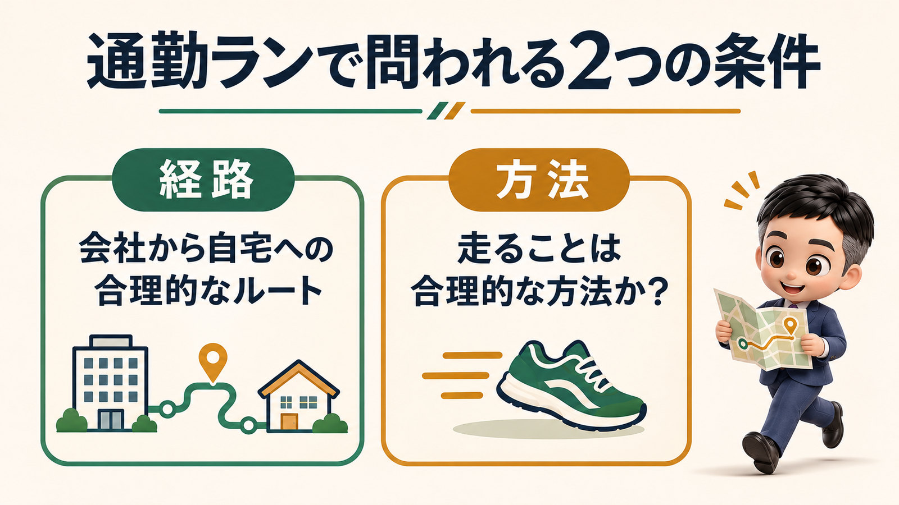
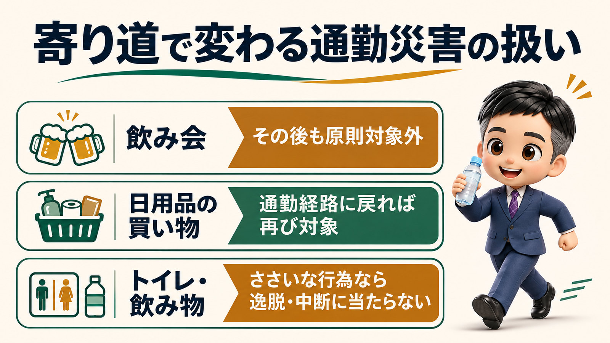

通勤ランで20キロ走って帰る途中に怪我をしても、労災はおりると思います。一駅歩いて帰るのと、理屈は同じだからです。
通勤ランで20キロ走って帰る途中に怪我をしても、労災はおりるのか？
今日は、通勤ランの話をします。
会社から家まで20キロを走って帰る途中に怪我をしたら、労災はおりるのか。
先に結論を言っておきます。
私は、労災はおりる可能性が高い。
その理由を、順番に整理していきます。
私自身、会社から家まで20キロ走って帰っていました。
この話は、私の実体験から来ています。
怪我をしたことはないのですが、会社員だった頃、会社から家まで走って帰ることがありました。
会社は大阪のなんば、家は枚方です。
直線距離で、だいたい20キロです。
行きは汗だくになるのが嫌なので、走るのは帰りだけでした。
会社に隠れてやっていたわけではありません。
ただ、会社の人にこの話をすると、議論になりました。
「走っている途中に怪我をしても、労災はおりないんじゃないか」
通勤中の怪我は、基本的に労災の扱いになります。
通勤中に怪我をした場合は、通勤災害として労災の扱いになるのが基本です。
ただし、条件があります。
一番大きな条件は、その通勤が「合理的な経路及び方法」で行われていたかどうかです。
東京労働局は、合理的な経路及び方法を「一般に労働者が用いるものと認められる経路及び方法」と説明しています。
電車で行く、自家用車で行く。
こういう普通の通勤なら、経路も方法も合理的です。
逆に、意味もないのにわざわざ遠回りをして、その途中で怪我をした場合は、労災はおりません。
では、走って通勤するのは、この条件に当てはまるのでしょうか。

経路は、最短距離で走っていれば問題ありません。
まず経路です。
私の場合、なんばから枚方まで、ほぼ直線距離で走っていました。
これなら、経路としては文句はないはずです。
直線距離なら20キロのところを、ぐるっと回って30キロ、40キロ走っていたなら話は別です。
労災に当たらない可能性が高くなります。
最短距離で走っていれば、合理的な経路と言えます。
方法は、一駅歩いて帰るのと同じ理屈です。
次に方法です。
20キロを走って帰ることが、合理的な方法と言えるのかどうか。
これは、誰にも決められないのではないかと思っています。
20キロなら、普通は電車か車に乗ります。
走る人は、多くはありません。
それでも、歩く・走るという行為が、非合理的な方法だとは言い切れない。
健康のために、一駅手前で降りて歩いて帰る人がいます。
一駅分を最短距離で歩くなら、経路も方法も特に問題はないはずです。
「一駅ならよくて、20キロならダメ」
こう線を引く理屈は、価値観の問題でしかありません。
一駅でよいなら、20キロでも30キロでもよいのではないでしょうか。
東京労働局も、徒歩など通常用いられる交通方法について書いています。
普段その方法を使っているかどうかにかかわらず、合理的な方法になるという趣旨です。
走ることを徒歩と同じように見てもらえるなら、ここはクリアできるのではないかと思っています。
一番突っ込まれるのは「それはトレーニングでは」です。
否認される要素として一番大きいのは、そもそもそれは通勤なのか、という点だと思います。
「あなた、それは通勤じゃなくてトレーニングじゃないですか」
ここを突っ込まれると、一番痛いのかもしれません。
トレーニングの要素が、まったくないとは言いません。
それでも、通勤は通勤です。
通勤ではないと言われるのは、トレーニングのために遠回りしている場合です。
20キロで帰れるところを、30キロかけて変なところを回って帰る。
これなら、通勤の要素はなくなっていきます。
最短距離を合理的な経路で帰っているなら、それは通勤だと思います。
私の帰り道には、大阪城公園がありました。
大阪城公園には、ぐるぐる回って走っているランナーがたくさんいます。
私も、そこで回りたい気持ちを抑えて、直線距離で帰っていました。
寄り道の後は対象外ですが、トイレや飲み物は大丈夫です。
もう一つの論点は、寄り道です。
通勤の途中で寄り道をすると、その後の帰り道は通勤災害の対象外になります。
よく言われるのが、会社終わりの飲み会です。
飲み会に行くと寄り道になるので、その後の帰り道で怪我をしても、労災の対象外です。
一方で、日常生活に必要な最小限の行為なら、扱いが変わります。
日用品の買い物などは、その行為をしている間は対象外ですが、通勤経路に戻った後は再び対象になります。
さらに、ささいな行為は、そもそも逸脱・中断にならないと東京労働局は説明しています。
経路近くのトイレを使う、経路上の店でジュースを買う、といった行為です。
20キロ走る途中で喉が渇いて、コンビニで飲み物を買う。
これも、また走り出せば対象ですので、問題ありません。

会社に申請した経路と違っても、労災とは関係ありません。
最後に、交通費の話です。
私は会社に言っていましたが、中には、電車の定期代をもらいながら、会社に黙って走って帰る人もいるかもしれません。
交通費を浮かせるためです。
会社に申請している経路と、違う方法で帰っていることになります。
それでも、通勤災害かどうかという点では、まったく関係ありません。
合理的な経路と方法であれば、会社にどの経路で申請していても、労災はおります。
「交通費を返せ」
会社からは、こう怒られるかもしれません。
それは労災とは別の話です。
まとめ
通勤中の怪我は、基本的に労災の扱いになります。
条件は、合理的な経路及び方法で通勤していたことです。
経路は、最短距離で走っていれば問題ありません。
方法は、一駅歩いて帰るのと同じ理屈で、20キロでも非合理とは言い切れないと思います。
徒歩など通常の交通方法は、普段使っているかどうかに関係なく合理的な方法になります。
一番突っ込まれるのは、通勤ではなくトレーニングではないか、という点です。
遠回りをせず最短距離で帰っていれば、通勤と言えると思います。
寄り道の後は対象外ですが、日用品の買い物なら経路に戻れば対象に戻ります。
トイレや飲み物を買うようなささいな行為は、逸脱・中断になりません。
会社に申請した経路と違っても、労災の判断には関係ありません。
走って通勤したいと言われたら、「普通じゃないからダメ」とは言わないでください。
働き方をアセントさせる一歩は、経路を一緒に確かめることだと思います。